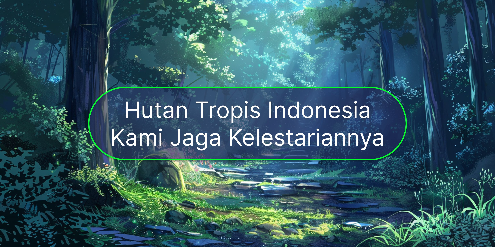

Beranda | Tentang Kami | Layanan | Tim Kami | Proyek | Kontak
PT. Nusantara Hijau adalah perusahaan terkemuka yang bergerak di bidang Manajemen Sumber Daya Alam (MSDA) di Indonesia. Berdiri sejak tahun 2005, kami telah berpengalaman lebih dari 19 tahun dalam pengelolaan sumber daya alam secara berkelanjutan dan bertanggung jawab.
Dengan tim ahli yang berpengalaman dan teknologi terkini, kami berkomitmen untuk menjaga keseimbangan antara pemanfaatan sumber daya alam dan kelestarian lingkungan demi generasi mendatang.

Menjadi perusahaan manajemen sumber daya alam terdepan di Asia Tenggara yang mengedepankan prinsip keberlanjutan, inovasi, dan tanggung jawab lingkungan.
Integritas | Inovasi | Keberlanjutan | Kolaborasi | Tanggung Jawab
Kami menyediakan berbagai layanan profesional di bidang manajemen sumber daya alam:
Pengelolaan hutan secara lestari meliputi inventarisasi hutan, perencanaan tata kelola, rehabilitasi lahan kritis, dan sertifikasi kehutanan (SVLK & FSC).
Analisis dan pengelolaan daerah aliran sungai (DAS), konservasi mata air, pengendalian banjir, dan penyediaan air bersih untuk masyarakat.
Konsultasi pertambangan ramah lingkungan, reklamasi pasca tambang, dan audit lingkungan sesuai standar AMDAL (Analisis Mengenai Dampak Lingkungan).
Program perlindungan flora dan fauna endemik Indonesia, penelitian ekosistem, dan pembangunan koridor satwa liar.
Didukung oleh para profesional berpengalaman di bidangnya:
| No | Nama | Jabatan | Keahlian | Pengalaman |
|---|---|---|---|---|
| 1 | Dr. Bambang Sulistyo, M.Si | Direktur Utama | Ekologi Hutan & Konservasi | 25 Tahun |
| 2 | Ir. Sari Dewi Pratiwi, M.T | Direktur Teknis | Teknik Lingkungan & AMDAL | 20 Tahun |
| 3 | Dr. Rudi Hartono, Ph.D | Kepala Riset & Inovasi | Ilmu Tanah & Hidrologi | 18 Tahun |
| 4 | Maya Anggraini, S.Hut, M.Sc | Manajer Konservasi | Keanekaragaman Hayati | 15 Tahun |
| 5 | Eko Prasetyo, S.T, M.Env | Manajer Pertambangan | Reklamasi & Rehabilitasi Lahan | 12 Tahun |
Beberapa proyek besar yang telah kami selesaikan:
| No | Nama Proyek | Lokasi | Tahun | Status |
|---|---|---|---|---|
| 1 | Rehabilitasi DAS Citarum | Jawa Barat | 2020 – 2022 | Selesai |
| 2 | Konservasi Orangutan Kalimantan | Kalimantan Tengah | 2021 – 2023 | Selesai |
| 3 | Reklamasi Tambang Nikel | Sulawesi Tenggara | 2022 – 2024 | Selesai |
| 4 | Restorasi Mangrove Pesisir | Sumatera Selatan | 2023 – 2025 | Berjalan |
| 5 | Pengelolaan Taman Nasional Lorentz | Papua | 2024 – 2026 | Berjalan |
Ingin bekerja sama atau konsultasi? Isi formulir di bawah ini:
PT. Nusantara Hijau
Jl. Lingkungan Hijau No. 45, Kebayoran Baru
Jakarta Selatan, DKI Jakarta 12180
Telp: (021) 7654-3210
Email: info@nusantarahijau.co.id
Website: www.nusantarahijau.co.id
PT. Nusantara Hijau © 2025 | Manajemen Sumber Daya Alam Indonesia